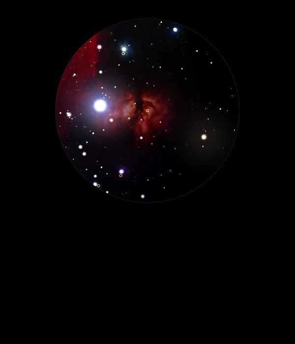

NGC 2024
Emission Nebula in Orion
NGC 2024
Mag 8.2
The Flame Nebula
19/12/14
You can really see why this Nebula is called The Flame Nebula
Once the dazzle of Alnitak, Zeta Orionis, is out of the FOV the
Nebula begins to appear as the eye adjusts from viewing the Mag
1.85 star
Not only does the Nebula resemble flames but it appears to move
and flare towards V1197 Ori, HIP 26953 at Mag 6.3
But, very faint and difficult to make out any of the structure
so familiar in photographs
16/01/15
Just a hint in 18mm with UHC filter attached, as long as
Alnitak (z Ori) is out of the FOV
However, it is as clear in 12mm with no filter
08/12/15
In 12mm Alnitak, z Ori, 50 Ori, HIP 26727A at Mag 1.85 needs to
be just outside the FOV, otherwise it is blinding!
There is a hint of nebulosity but no feel of the structure